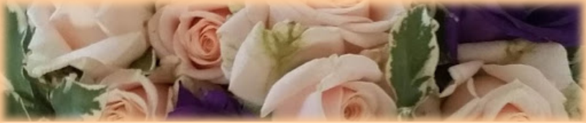

Marche nuptiale
A Nuptial March
Georges Brassens (1957)
|
|

NOTES
|
(1) Comme pour la plupart des chansons de Brassens sur ce site, cette traduction chantable s'inspire de la traduction en prose publiée sur son blog par David Yendley (http://dbarf.blogspot.fr/2011/01/). (2) La mère de Georges Brassens, Elvira Dagrossa, issue d'une famille italienne, avait déjà été mariée et avait eu une fille, Simone en 1912. Son mari avait été mobilisé en 1914-1918 et était mort en 1919. Elle épousa Jean-Louis Brassens en 1919 après avoir été veuve pendant un an. On voit mal comment ce "longtemps d'amour, longtemps de fiançailles" pourrait se rapporter à elle. Quand à Georges, il naquit en 1921 et c'était un enfant légitime qui n'a pu assister au mariage de ses parents, si ce n'est, peut-être, dans le ventre de sa mère! (3) La mariée pleurait-elle pour avoir "vécu dans le péché pendant si longtemps, ou parce qu'une cérémonie limitée au mariage civil était contraire à sa religion et menaçait le salut de son âme? Bien que les "enfants de choeur" de la strophe 5 évoquent une cérémonie religieuse. (4) Les hommes libres-penseurs font exprès de ne pas s'adresser au Dieu des chrétiens qu'ils jugent borné et mesquin, mais au maître de l'Olympe. |
(1) As for most of the Brassens songs at this site, this singable translation is based on the prose translation posted by David Yendley on his blog (http://dbarf.blogspot.fr/2012/05/alphabetical-list-of-my-brassens-songs.html). (2) Georges Brassens mother, Elvira Dagrossa, who came from an Italian family, had been married previously and had had a daughter, Simone, in 1912. Her husband had been called up during the 1914- 1918 war and he had been killed in 1919. As she married Jean-Louis Brassens in 1920 after having been a widow for only one year, it is difficult to see how they could have been lovers and engaged for a long time. As Georges Brassens was born, their legitimate son in 1921, it was impossible for him to have been at his parents wedding except in the womb perhaps! (3) Did the bride weep because she had been "living in sin" for so long a time or because she was getting married in a civil ceremony in spite of her religion, thus jeopardizing her immortal soul? Though the mention of "altar boys" in stanza 5 hints at a church ceremony. (4) The sceptical menfolks do not address the narrow-minded Christian god, but Jupiter, on purpose. |
 Les parents de Georges Brassens
|